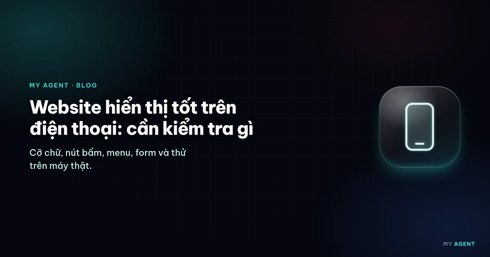
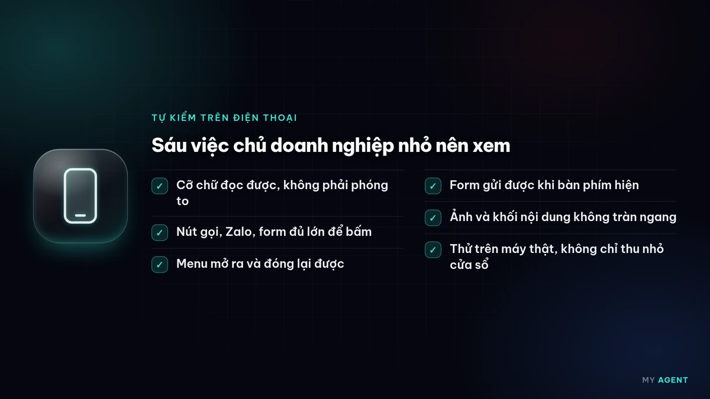
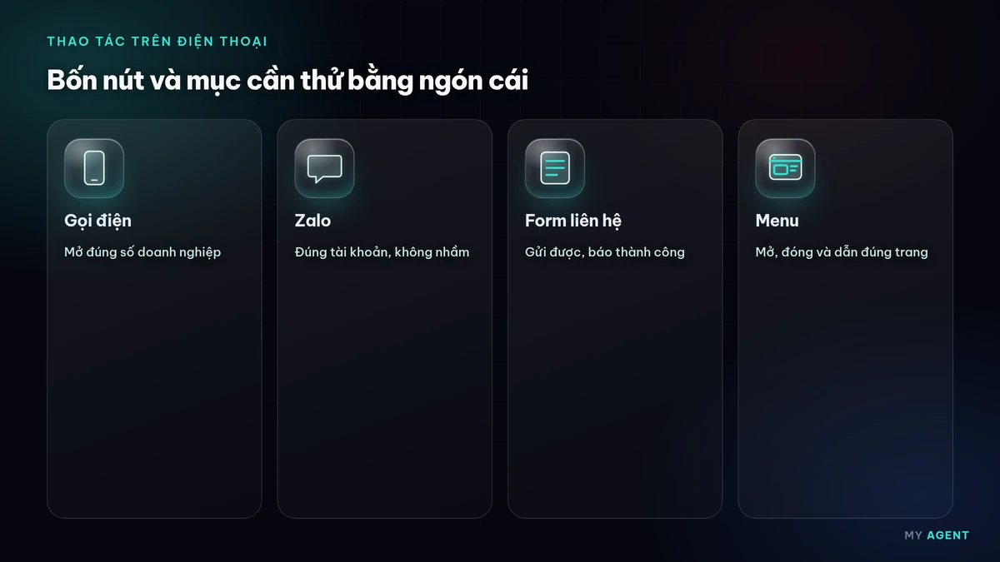
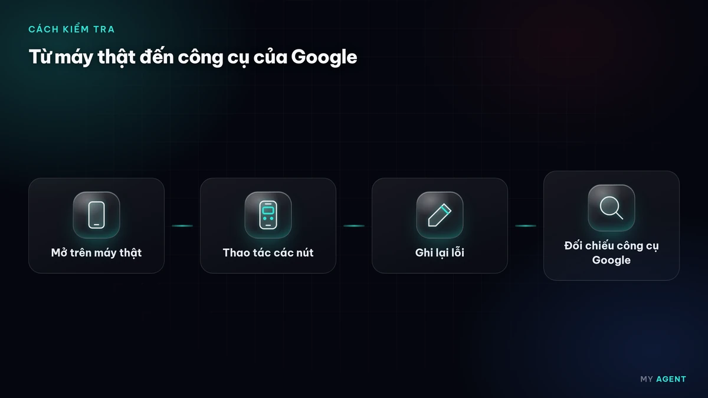

Nhiều khách xem website trên điện thoại trước khi gọi điện hay nhắn tin. Một trang chỉ ổn trên máy tính — chữ nhỏ, nút khó bấm, form bị che, ảnh tràn ra ngoài — dễ làm khách bỏ dở. Bài này nêu những việc chủ doanh nghiệp nhỏ có thể tự kiểm trên máy thật, đúng với cửa hàng, phòng khám, xưởng, quán ăn hay văn phòng dịch vụ. Phần trang mở chậm hay ảnh nặng được nêu riêng ở tốc độ website cơ bản; ở đây chúng tôi tập trung vào hiển thị và thao tác.

Cỡ chữ và khoảng cách
Mở trang chủ, một trang dịch vụ và trang liên hệ trên điện thoại, cầm dọc như khách vẫn dùng. Chữ nội dung phải đọc được mà không cần hai ngón tay phóng to. Tiêu đề và đoạn văn không dính sát mép màn hình. Nếu phải nghiêng máy hoặc phóng to mới đọc được tên dịch vụ, địa chỉ hay hướng dẫn liên hệ, cỡ chữ đang chưa phù hợp.
Không cần đo từng pixel. Chỉ cần tự hỏi: cầm máy bằng một tay, nhìn bình thường, đọc được không? Chữ trên nút cũng vậy: nếu nhãn bị cắt hoặc xuống hàng rối, khách khó biết mình đang bấm gì.
Nút gọi, Zalo và các nút quan trọng
Thử bấm từng nút khách hay dùng: gọi điện, nhắn Zalo, gửi form, xem bản đồ nếu trang có. Nút phải đủ lớn và cách nhau đủ để ngón cái không chạm nhầm nút bên cạnh. Bấm gọi phải mở đúng số; bấm Zalo phải mở đúng tài khoản doanh nghiệp, không dẫn sang một tài khoản khác.
Nút liên hệ nên thấy được khi đang xem dịch vụ, không chỉ nằm cuối trang. Việc website dùng để nhận liên hệ được nêu trong Website dùng để làm gì cho doanh nghiệp nhỏ.

Menu trên điện thoại
Menu dạng biểu tượng (thường ở góc trên) phải mở ra được và đóng lại được. Từng mục phải dẫn đúng trang, không bị thanh cố định che mất chữ hoặc nút đóng. Thử lần lượt các mục chính: trang chủ, dịch vụ, giới thiệu, liên hệ.
Nếu mở menu rồi không đóng được, mục bị cắt chữ, hoặc bấm một mục lại ở nguyên trang cũ, khách dễ bỏ cuộc. Nên kiểm lại sau mỗi lần thêm trang mới vào menu.
Form liên hệ
Mở form trên điện thoại. Ô nhập tên, số điện thoại hay nội dung phải đủ rộng, không bị cắt. Khi bàn phím hiện lên, nút gửi vẫn tới được: cuộn được tới nút, không bị bàn phím hoặc thanh cố định che mãi. Gửi thử một yêu cầu thật (ghi rõ đây là bài kiểm tra) rồi xác nhận form báo thành công và thông tin tới đúng chỗ nhận.
Form không cần dài. Tên, cách liên hệ và nhu cầu thường là đủ, giống gợi ý ở bài nội dung trên website: mỗi trang nên viết gì.
Ảnh và bố cục không bị tràn
Vuốt thử sang trái, sang phải ở trang chủ và một trang có nhiều ảnh (sản phẩm, công trình, thực đơn). Nếu cả trang trượt ngang, thường có ảnh, bảng hoặc khối chữ đang rộng hơn màn hình. Ảnh nên nằm gọn trong khung, không đẩy chữ hay nút ra ngoài.
Bảng dài, nếu có, nên cuộn trong khối của nó chứ không kéo cả trang theo chiều ngang. Việc nén ảnh để trang mở nhanh hơn thuộc bài tốc độ website cơ bản. Ở đây chỉ cần thấy: ảnh và khối nội dung không làm vỡ bố cục trên điện thoại.
Kiểm tra trên điện thoại thật, không chỉ thu nhỏ cửa sổ máy tính
Thu nhỏ cửa sổ trình duyệt trên máy tính cho gần bằng màn hình điện thoại chỉ cho thấy bố cục gần đúng. Cách đó không giống thao tác bằng ngón cái, bàn phím ảo, thanh địa chỉ, hay mạng di động. Nên mở bằng chính điện thoại của anh/chị; nếu có thêm máy cỡ khác hoặc hệ điều hành khác thì nên thử, vì thanh trình duyệt và cách hiện menu có thể khác nhau.
Nên xem cả khi đang dùng Wi-Fi và khi dùng mạng di động, vì vùng nhìn thấy trên màn hình có thể thay đổi. Ghi lại trang nào, thao tác nào bị lỗi, kèm ảnh chụp màn hình. Danh sách này giúp người chăm sóc web sửa đúng chỗ. Nên lặp lại khi đổi giao diện, thêm trang hoặc đổi nút liên hệ; việc này thuộc chăm sóc website sau khi bàn giao.
Dùng thêm công cụ của Google để đối chiếu
Sau khi đã thử trên máy thật, có thể đối chiếu với cách Google nhìn trang trên điện thoại:
- Kiểm tra URL trong Search Console: chạy kiểm tra URL trực tiếp rồi xem ảnh trang Google thu được trên giao diện điện thoại.
- PageSpeed Insights hoặc Lighthouse: xem trang ở chế độ điện thoại, gồm gợi ý về khung nhìn (viewport) và vùng bấm.
Công cụ kiểm tra thân thiện với thiết bị di động (Mobile-Friendly Test) và báo cáo Mobile Usability trong Search Console đã ngừng từ tháng 12/2023, theo thông báo của Google. Không cần tìm lại công cụ đó. Kết quả trên công cụ chỉ để đối chiếu; quyết định cuối vẫn dựa trên việc anh/chị thao tác được trên máy thật. Các bước nền tảng khác khi đưa trang lên tìm kiếm nằm ở checklist SEO cơ bản.

Nên kiểm tra những trang nào, và khi nào làm lại
Không cần duyệt hết mọi đường dẫn trong một lần. Ưu tiên trang chủ, một trang dịch vụ chính, trang liên hệ, và trang anh/chị hay gửi cho khách. Nếu có trang bài viết hoặc thư viện ảnh, xem thêm một trang điển hình.
My Agent hỗ trợ thiết kế website với giao diện dùng được trên điện thoại, và chăm sóc website khi cần rà lại sau khi trang đã chạy. Chúng tôi phản hồi trong giờ làm việc. Nếu anh/chị muốn trao đổi, hãy liên hệ. Việc liên quan tới nội dung trên công cụ tìm kiếm có thể xem thêm ở SEO tổng thể. Giá tham khảo, chưa bao gồm VAT, nằm tại bảng giá.
Câu hỏi thường gặp
Chỉ thu nhỏ cửa sổ trên máy tính thì có đủ không?
Chưa đủ. Cách đó giúp xem bố cục gần đúng, nhưng không kiểm được nút bấm bằng ngón tay, bàn phím ảo, menu thật trên điện thoại, hay form khi đang gõ. Nên luôn mở bằng máy thật.
Cần kiểm tra trên bao nhiêu điện thoại?
Ít nhất một máy anh/chị đang dùng hằng ngày. Nếu có thêm máy cỡ khác hoặc hệ điều hành khác thì nên thử. Không cần mua nhiều máy chỉ để kiểm tra.
Công cụ kiểm tra thân thiện với thiết bị di động của Google còn dùng được không?
Công cụ đó đã ngừng từ tháng 12/2023. Hiện có thể dùng Kiểm tra URL trong Search Console, PageSpeed Insights hoặc Lighthouse để đối chiếu. Kết quả công cụ không thay việc tự thao tác trên điện thoại thật.
Khi nào nên kiểm tra lại?
Sau mỗi lần đổi giao diện, thêm trang, đổi nút gọi, Zalo hoặc form, hoặc khi chuyển hosting nếu giao diện bị ảnh hưởng. Một lượt kiểm ngắn các trang chính là đủ; không cần làm mỗi ngày.
Từ khóa: website · điện thoại · doanh nghiệp nhỏ · kiểm tra website